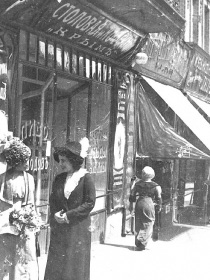

Бакалійна лавка Якова Ромащенка
вулиця Фундуклеївська, 92Цікавий факт – свою назву бакалійні магазини отримали від турецького слова bakkal – продавець овочів. Згодом, окрім продуктів харчування, які мають довгий термін придатності, почали продавались і побутові товари.
Цікаві відомості